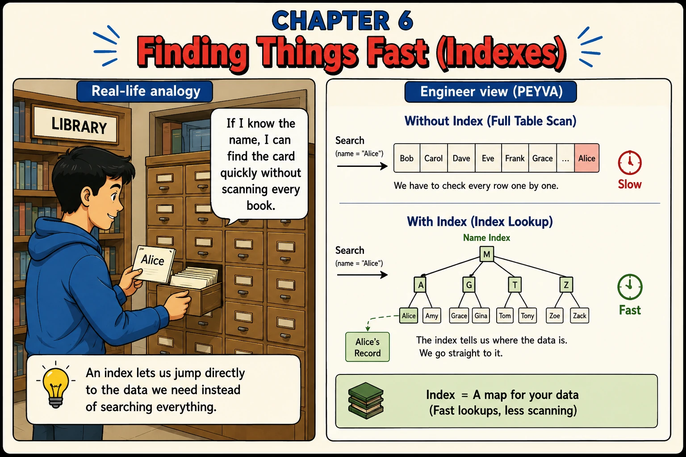

Chapter 6
Finding Things Fast (Indexes)
You don't scan every page. You use the index.

1. Concepts
- Full Table Scan. Checking every row one by one until you find the match: correct, but slow as the table grows.
- Index. A separate structure that maps a value (like a name) directly to where its row lives.
- B+ Tree. The tree structure most databases use to keep an index searchable in a handful of steps.
- Index Lookup. Using the index to jump straight to the data page that holds the row you want.
2. Build It Hands-on Building in Go, change in Chapter 0
Grounding: investigate before claiming. Forbid claims about code it has not run, and you get timings instead of confident guesses.
Documented in Anthropic: Prompting best practices, Minimizing hallucinations in agentic coding
Every prompt below is copied with these rules, about 470 tokens for the chapter
Build this in Go, standard library only.
Code in peyva/<component>/, one folder per component.
Money: exact decimal or integer minor units, never floating point, two decimal places.
The goal and invariants are in peyva/goal.md.
The Portal is plain HTML and CSS. No framework, no build step, no dependencies.
It lives in peyva/portal/. Anything it needs from the server is Go, standard library only.
One customer's wallet at a time, never everyone's at once. A switcher at the top says whose.
New work joins the menu.
The goal and invariants are in peyva/goal.md.
1 of 2 Build~255 tokens
The Vault stores accounts keyed by owner. Each account also carries a region, which nothing indexes. Do this in order and don't skip ahead: 1. Seed the Vault with 50,000 accounts and randomised regions. 2. Time a lookup of every account in one region. Report the number before changing anything. 3. Add an index on region. 4. Time the same lookup again and report both numbers side by side. 5. Time 1,000 account inserts with the index present, then with it dropped, and report that difference too. Never state a performance claim you have not measured on this machine. Show me real numbers, not estimates, and if the improvement is smaller than expected, say so rather than explaining it away. Done when I have four real numbers: read time before and after, write time before and after.
2 of 2 Portal~215 tokens
Someone typing a handle from memory should know they have the right person before they send. Have Send look the handle up as it is typed and show whose account it is. Show the recipient's handle and owner, never their balance. That is not the sender's to see. Then show me, from a real timing you have run rather than an estimate, how long that lookup takes against a table with thousands of accounts, with the index and without it. Done when a wrong handle is obvious before sending, and you have shown me both timings.
Quick tip: An index speeds up reads at the cost of slightly slower writes. Every index has to stay current too.